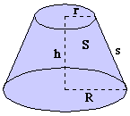

Frustum of a Right Circular Cone :
The part of a right circular cone between the base and a plane parallel to the base whose distance from the base is less than the height of the cone.

Height: h
Radius of bases: r, R
Slant height: s
Lateral surface area: S
Total surface area: T
Volume: V
s = sqrt([R-r]2+h2)
S = Pi(r+R)s
T = Pi(r[r+s]+R[R+s])
V = Pi(R2+rR+r2)h/3